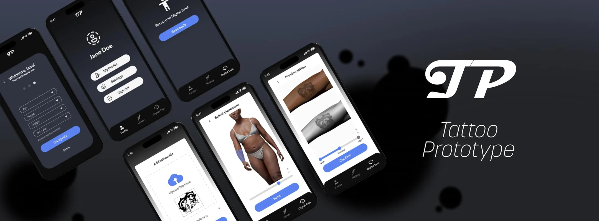

TattooPrototype
TattooPrototype is a mobile app that helps tattoo artists plan and design stencils with precision, using 3D scanning and digital twin technology for accurate measurements.
- Tools
- Figma, Illustrator, Adobe XD
- Field
- UX/UI Design, Prototype Development, Product Development
- Stakeholder
- University of Kristianstad

My TattooPrototype project was selected by the professors as a showcase project for future students in the course.
Background
Sometimes a finished tattoo can look very different from the agreed-upon stencil, much to the disappointment of the client. Usually the client will have highly specific requests for their tattoo design. Various factors such as needle size, technique, placement, and the customer's skin color can influence the final appearance of the tattoo. These will be discussed together with the tattoo artist in preparations for the appointment.
Problem
An experienced tattoo artist is aware of these different factors and has already adjusted the design accordingly. Unfortunately, this is not always the case: causing lifelong disappointment and costly cover up appointments, or even laser removal treatment.
Opportunity
By using a digital twin to preview the design based on factors such as size, placement, aging, tattoo artists can use this as a tool to manage client expectations and make informed decisions for design alterations. This can enhance client satisfaction by setting realistic expectations and ensuring they feel involved and in control of the process.
User interviews
From interviews with 15 people who regret their tattoos, I learned more about the most common cause of regret.
Up to 40% felt like their tattoos did not turn out the way they had expected. When asked why, most common reasons were bad tattoos due to inexperienced tattoo artists, and design choices that did not turn out how they imagined.
- 40%
- Did not look as expected
- 20%
- Placement
- 20%
- Design choice
- 13%
- Size
- 7%
- Cost
Market research
From the market research I want to highlight these two examples of a common reason for client dissatisfaction.
Tattoo aging
The two images on the left are from a TikTok user who is dissatisfied with their tattoo after it has healed. The issue lies in the design itself: with too many small details on a small area, and the entire tattoo was done with a single needle. In the healed tattoo, the lines have "blended," and the details are difficult to distinguish. The end result is a healed tattoo that looks different from the initial design.
Tattoo color
The image on the left is a representation of how the same ink colors can appear different based on the clients' skin color. In a simplified explanation: when someone is tattooed, tiny needles penetrate the skin and deposit ink inside the layers of the skin. This becomes a problem when inexperienced tattoo artists - presumably accustomed to a very homogeneous client base - tattoo harder and deeper on darker skin compared to lighter skin. This can harm the clients skin and ruin the tattoo.
Design solution
Avoid client dissatisfaction by using a digital twin application, which allows the client to see the design on their body before proceeding to getting tattoos.
Allow tattoo artists to make adjustments to size, placement, color and design based on how it will appear on the clients' own body.
Make the client feel in control of their own tattoo process, increasing communication between tattoo artist and client which will leave little room for misunderstandings or disappointment.
Concept sketch
After feeling confident in my understanding for the problem area I started sketching for solutions. With a content priority guide I explored simple wireframes.
Low fidelity prototype
An early Low-Fidelity prototype was created based on sketches, wireframes and content priority guides.
High fidelity prototype
After further design alterations and mapping out the user journey, I created a prototype with higher fidelity.
Final prototype
This digital artifact is intended for use by tattoo clients together with tattoo artists. The client inputs their information, which helps the program's AI provide precise information about the tattoo.
At this stage, they can determine if the tattoo is too small and won't look good when healed, allowing the tattoo artist to make adjustments before starting the tattoo. Once corrections are made, the design can be printed, and an exact stencil in the right size based on the digital twin will be generated. Subsequently, the new tattoo will be present on the customer's digital twin, allowing them to plan their next tattoo with precision.
Reflection
This project explores the digital twin concept for an early-stage mobile prototype, encompassing market research, design ideation, and prototype development.
To refine and expand the project, further user studies are required. The initial field interview involved a small sample size of 15 participants; a larger pool would provide more reliable data.
Early-stage development would benefit from creating detailed user personas and seeking professional insights from practicing tattoo artists.
Subsequent user studies should focus on testing the prototype, gathering valuable feedback, and implementing changes based on that input.
Additionally, further research into the ethical and safe use of the technology for clients is necessary to ensure its responsible application.